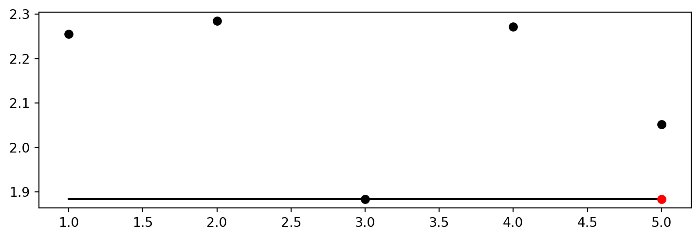
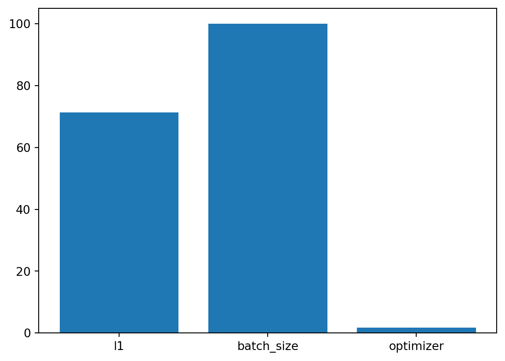

pip list | grep "spot[RiverPython]"spotPython 0.2.31
spotRiver 0.0.93Note: you may need to restart the kernel to use updated packages.In this tutorial, we will show how spotPython can be integrated into the PyTorch training workflow.
This document refers to the following software versions:
python: 3.10.10torch: 2.0.1torchvision: 0.15.0pip list | grep "spot[RiverPython]"spotPython 0.2.31
spotRiver 0.0.93Note: you may need to restart the kernel to use updated packages.spotPython can be installed via pip. Alternatively, the source code can be downloaded from gitHub: https://github.com/sequential-parameter-optimization/spotPython.
!pip install spotPythonspotPython from gitHub.# import sys
# !{sys.executable} -m pip install --upgrade build
# !{sys.executable} -m pip install --upgrade --force-reinstall spotPythonBefore we consider the detailed experimental setup, we select the parameters that affect run time, initial design size and the device that is used.
MAX_TIME = 1
INIT_SIZE = 5
DEVICE = None # "cpu" # "cuda:0"from spotPython.utils.device import getDevice
DEVICE = getDevice(DEVICE)
print(DEVICE)mpsimport os
import copy
import socket
from datetime import datetime
from dateutil.tz import tzlocal
start_time = datetime.now(tzlocal())
HOSTNAME = socket.gethostname().split(".")[0]
experiment_name = '12-torch' + "_" + HOSTNAME + "_" + str(MAX_TIME) + "min_" + str(INIT_SIZE) + "init_" + str(start_time).split(".", 1)[0].replace(' ', '_')
experiment_name = experiment_name.replace(':', '-')
print(experiment_name)
if not os.path.exists('./figures'):
os.makedirs('./figures')12-torch_p040025_1min_5init_2023-06-16_09-45-20fun_control DictionaryspotPython uses a Python dictionary for storing the information required for the hyperparameter tuning process, which was described in Section 13.2.
from spotPython.utils.init import fun_control_init
fun_control = fun_control_init(task="classification",
tensorboard_path="runs/12_spot_hpt_torch_cifar10",
device=DEVICE)from torchvision import datasets, transforms
import torchvision
def load_data(data_dir="./data"):
transform = transforms.Compose([
transforms.ToTensor(),
transforms.Normalize((0.5, 0.5, 0.5), (0.5, 0.5, 0.5))
])
trainset = torchvision.datasets.CIFAR10(
root=data_dir, train=True, download=True, transform=transform)
testset = torchvision.datasets.CIFAR10(
root=data_dir, train=False, download=True, transform=transform)
return trainset, testset
train, test = load_data()Files already downloaded and verifiedFiles already downloaded and verifiedfun_control dictionary:n_samples = len(train)
# add the dataset to the fun_control
fun_control.update({"data": None, # dataset,
"train": train,
"test": test,
"n_samples": n_samples,
"target_column": None})After the training and test data are specified and added to the fun_control dictionary, spotPython allows the specification of a data preprocessing pipeline, e.g., for the scaling of the data or for the one-hot encoding of categorical variables, see Section 13.4.1. This feature is not used here, so we do not change the default value (which is None).
algorithm and core_model_hyper_dictspotPython includes the Net_CIFAR10 class which is implemented in the file netcifar10.py. The class is imported here.
This class inherits from the class Net_Core which is implemented in the file netcore.py, see ?sec-the-net-core-class-24.
from spotPython.torch.netcifar10 import Net_CIFAR10
from spotPython.data.torch_hyper_dict import TorchHyperDict
from spotPython.hyperparameters.values import add_core_model_to_fun_control
fun_control = add_core_model_to_fun_control(core_model=Net_CIFAR10,
fun_control=fun_control,
hyper_dict=TorchHyperDict,
filename=None)hyper_dict Hyperparameters for the Selected AlgorithmspotPython uses JSON files for the specification of the hyperparameters, which were described in Section 13.5.2.
The corresponding entries for the Net_CIFAR10 class are shown below.
"Net_CIFAR10":
{
"l1": {
"type": "int",
"default": 5,
"transform": "transform_power_2_int",
"lower": 2,
"upper": 9},
"l2": {
"type": "int",
"default": 5,
"transform": "transform_power_2_int",
"lower": 2,
"upper": 9},
"lr_mult": {
"type": "float",
"default": 1.0,
"transform": "None",
"lower": 0.1,
"upper": 10.0},
"batch_size": {
"type": "int",
"default": 4,
"transform": "transform_power_2_int",
"lower": 1,
"upper": 4},
"epochs": {
"type": "int",
"default": 3,
"transform": "transform_power_2_int",
"lower": 3,
"upper": 4},
"k_folds": {
"type": "int",
"default": 1,
"transform": "None",
"lower": 1,
"upper": 1},
"patience": {
"type": "int",
"default": 5,
"transform": "None",
"lower": 2,
"upper": 10
},
"optimizer": {
"levels": ["Adadelta",
"Adagrad",
"Adam",
"AdamW",
"SparseAdam",
"Adamax",
"ASGD",
"NAdam",
"RAdam",
"RMSprop",
"Rprop",
"SGD"],
"type": "factor",
"default": "SGD",
"transform": "None",
"class_name": "torch.optim",
"core_model_parameter_type": "str",
"lower": 0,
"upper": 12},
"sgd_momentum": {
"type": "float",
"default": 0.0,
"transform": "None",
"lower": 0.0,
"upper": 1.0}
},spotPython provides functions for modifying the hyperparameters, their bounds and factors as well as for activating and de-activating hyperparameters without re-compilation of the Python source code. These functions were described in Section 13.5.3.
hyper_dict Hyperparameters for the Selected Algorithm aka core_modelThe hyperparameter k_folds is not used, it is de-activated here by setting the lower and upper bound to the same value.
from spotPython.hyperparameters.values import modify_hyper_parameter_bounds
# fun_control = modify_hyper_parameter_bounds(fun_control, "delta", bounds=[1e-10, 1e-6])
# fun_control = modify_hyper_parameter_bounds(fun_control, "min_samples_split", bounds=[3, 20])
#fun_control = modify_hyper_parameter_bounds(fun_control, "merit_preprune", bounds=[0, 0])
# fun_control["core_model_hyper_dict"]
fun_control = modify_hyper_parameter_bounds(fun_control, "k_folds", bounds=[2, 2])from spotPython.hyperparameters.values import modify_hyper_parameter_levels
fun_control = modify_hyper_parameter_levels(fun_control, "optimizer", ["Adam"])
# fun_control = modify_hyper_parameter_levels(fun_control, "leaf_model", ["LinearRegression"])
# fun_control["core_model_hyper_dict"]Optimizers can be selected as described in Section 18.8.2.
Optimizers are described in Section 13.6.
fun_control = modify_hyper_parameter_bounds(fun_control,
"lr_mult", bounds=[1e-3, 1e-3])
fun_control = modify_hyper_parameter_bounds(fun_control,
"sgd_momentum", bounds=[0.9, 0.9])The evaluation procedure requires the specification of two elements:
These are described in Section 18.9.
The key "loss_function" specifies the loss function which is used during the optimization, see Section 13.8.
We will use CrossEntropy loss for the multiclass-classification task.
from torch.nn import CrossEntropyLoss
loss_function = CrossEntropyLoss()
fun_control.update({
"loss_function": loss_function,
"shuffle": True,
"eval": "train_hold_out"
})import torchmetrics
metric_torch = torchmetrics.Accuracy(task="multiclass",
num_classes=10).to(fun_control["device"])
fun_control.update({"metric_torch": metric_torch})The following code passes the information about the parameter ranges and bounds to spot.
# extract the variable types, names, and bounds
from spotPython.hyperparameters.values import (get_bound_values,
get_var_name,
get_var_type,)
var_type = get_var_type(fun_control)
var_name = get_var_name(fun_control)
fun_control.update({"var_type": var_type,
"var_name": var_name})
lower = get_bound_values(fun_control, "lower")
upper = get_bound_values(fun_control, "upper")from spotPython.utils.eda import gen_design_table
print(gen_design_table(fun_control))| name | type | default | lower | upper | transform |
|--------------|--------|-----------|---------|---------|-----------------------|
| l1 | int | 5 | 2 | 9 | transform_power_2_int |
| l2 | int | 5 | 2 | 9 | transform_power_2_int |
| lr_mult | float | 1.0 | 0.001 | 0.001 | None |
| batch_size | int | 4 | 1 | 4 | transform_power_2_int |
| epochs | int | 3 | 3 | 4 | transform_power_2_int |
| k_folds | int | 1 | 2 | 2 | None |
| patience | int | 5 | 2 | 10 | None |
| optimizer | factor | SGD | 0 | 0 | None |
| sgd_momentum | float | 0.0 | 0.9 | 0.9 | None |fun_torchThe objective function fun_torch is selected next. It implements an interface from PyTorch’s training, validation, and testing methods to spotPython.
from spotPython.fun.hypertorch import HyperTorch
fun = HyperTorch().fun_torchimport numpy as np
from spotPython.spot import spot
from math import inf
spot_tuner = spot.Spot(fun=fun,
lower = lower,
upper = upper,
fun_evals = inf,
fun_repeats = 1,
max_time = MAX_TIME,
noise = False,
tolerance_x = np.sqrt(np.spacing(1)),
var_type = var_type,
var_name = var_name,
infill_criterion = "y",
n_points = 1,
seed=123,
log_level = 50,
show_models= False,
show_progress= True,
fun_control = fun_control,
design_control={"init_size": INIT_SIZE,
"repeats": 1},
surrogate_control={"noise": True,
"cod_type": "norm",
"min_theta": -4,
"max_theta": 3,
"n_theta": len(var_name),
"model_fun_evals": 10_000,
"log_level": 50
})
spot_tuner.run(X_start=X_start)
config: {'l1': 128, 'l2': 8, 'lr_mult': 0.001, 'batch_size': 16, 'epochs': 16, 'k_folds': 2, 'patience': 5, 'optimizer': 'Adam', 'sgd_momentum': 0.9}
Epoch: 1Loss on hold-out set: 2.3143477392196656
Accuracy on hold-out set: 0.1008
MulticlassAccuracy value on hold-out data: 0.10080000013113022
Epoch: 2Loss on hold-out set: 2.311074648094177
Accuracy on hold-out set: 0.11105
MulticlassAccuracy value on hold-out data: 0.11105000227689743
Epoch: 3Loss on hold-out set: 2.30761670665741
Accuracy on hold-out set: 0.1419
MulticlassAccuracy value on hold-out data: 0.14190000295639038
Epoch: 4Loss on hold-out set: 2.303876215171814
Accuracy on hold-out set: 0.1486
MulticlassAccuracy value on hold-out data: 0.1485999971628189
Epoch: 5Loss on hold-out set: 2.299960602760315
Accuracy on hold-out set: 0.1417
MulticlassAccuracy value on hold-out data: 0.14169999957084656
Epoch: 6Loss on hold-out set: 2.2961855463027954
Accuracy on hold-out set: 0.1254
MulticlassAccuracy value on hold-out data: 0.12540000677108765
Epoch: 7Loss on hold-out set: 2.292491125297546
Accuracy on hold-out set: 0.11095
MulticlassAccuracy value on hold-out data: 0.11095000058412552
Epoch: 8Loss on hold-out set: 2.288818277931213
Accuracy on hold-out set: 0.1021
MulticlassAccuracy value on hold-out data: 0.10209999978542328
Epoch: 9Loss on hold-out set: 2.2850627559661865
Accuracy on hold-out set: 0.1005
MulticlassAccuracy value on hold-out data: 0.10050000250339508
Epoch: 10Loss on hold-out set: 2.281196755027771
Accuracy on hold-out set: 0.1036
MulticlassAccuracy value on hold-out data: 0.10360000282526016
Epoch: 11Loss on hold-out set: 2.2771963079452515
Accuracy on hold-out set: 0.10885
MulticlassAccuracy value on hold-out data: 0.10885000228881836
Epoch: 12Loss on hold-out set: 2.2730105941772463
Accuracy on hold-out set: 0.11565
MulticlassAccuracy value on hold-out data: 0.1156499981880188
Epoch: 13Loss on hold-out set: 2.268723419380188
Accuracy on hold-out set: 0.12015
MulticlassAccuracy value on hold-out data: 0.12014999985694885
Epoch: 14Loss on hold-out set: 2.264324759101868
Accuracy on hold-out set: 0.1244
MulticlassAccuracy value on hold-out data: 0.12439999729394913
Epoch: 15Loss on hold-out set: 2.2598719541549683
Accuracy on hold-out set: 0.12975
MulticlassAccuracy value on hold-out data: 0.12974999845027924
Epoch: 16Loss on hold-out set: 2.255367957305908
Accuracy on hold-out set: 0.13555
MulticlassAccuracy value on hold-out data: 0.13555000722408295
Returned to Spot: Validation loss: 2.255367957305908
----------------------------------------------
config: {'l1': 16, 'l2': 16, 'lr_mult': 0.001, 'batch_size': 8, 'epochs': 8, 'k_folds': 2, 'patience': 7, 'optimizer': 'Adam', 'sgd_momentum': 0.9}
Epoch: 1Loss on hold-out set: 2.3116722235679625
Accuracy on hold-out set: 0.1006
MulticlassAccuracy value on hold-out data: 0.1005999967455864
Epoch: 2Loss on hold-out set: 2.309834736919403
Accuracy on hold-out set: 0.1006
MulticlassAccuracy value on hold-out data: 0.1005999967455864
Epoch: 3Loss on hold-out set: 2.3072648153305053
Accuracy on hold-out set: 0.1006
MulticlassAccuracy value on hold-out data: 0.1005999967455864
Epoch: 4Loss on hold-out set: 2.3040280451774597
Accuracy on hold-out set: 0.1006
MulticlassAccuracy value on hold-out data: 0.1005999967455864
Epoch: 5Loss on hold-out set: 2.300648400402069
Accuracy on hold-out set: 0.1006
MulticlassAccuracy value on hold-out data: 0.1005999967455864
Epoch: 6Loss on hold-out set: 2.2967206232070922
Accuracy on hold-out set: 0.1006
MulticlassAccuracy value on hold-out data: 0.1005999967455864
Epoch: 7Loss on hold-out set: 2.2911540941238404
Accuracy on hold-out set: 0.1006
MulticlassAccuracy value on hold-out data: 0.1005999967455864
Epoch: 8Loss on hold-out set: 2.2846229887008667
Accuracy on hold-out set: 0.1006
MulticlassAccuracy value on hold-out data: 0.1005999967455864
Returned to Spot: Validation loss: 2.2846229887008667
----------------------------------------------
config: {'l1': 256, 'l2': 128, 'lr_mult': 0.001, 'batch_size': 2, 'epochs': 16, 'k_folds': 2, 'patience': 9, 'optimizer': 'Adam', 'sgd_momentum': 0.9}
Epoch: 1Loss on hold-out set: 2.290386575722694
Accuracy on hold-out set: 0.1183
MulticlassAccuracy value on hold-out data: 0.11829999834299088
Epoch: 2Loss on hold-out set: 2.2583579830288887
Accuracy on hold-out set: 0.20085
MulticlassAccuracy value on hold-out data: 0.2008499950170517
Epoch: 3Loss on hold-out set: 2.1992413662314414
Accuracy on hold-out set: 0.2457
MulticlassAccuracy value on hold-out data: 0.24570000171661377
Epoch: 4Loss on hold-out set: 2.1311236470460893
Accuracy on hold-out set: 0.2599
MulticlassAccuracy value on hold-out data: 0.2599000036716461
Epoch: 5Loss on hold-out set: 2.080222967290878
Accuracy on hold-out set: 0.2668
MulticlassAccuracy value on hold-out data: 0.2667999863624573
Epoch: 6Loss on hold-out set: 2.042916475570202
Accuracy on hold-out set: 0.27375
MulticlassAccuracy value on hold-out data: 0.2737500071525574
Epoch: 7Loss on hold-out set: 2.014063339072466
Accuracy on hold-out set: 0.2828
MulticlassAccuracy value on hold-out data: 0.28279998898506165
Epoch: 8Loss on hold-out set: 1.9894880776822568
Accuracy on hold-out set: 0.2906
MulticlassAccuracy value on hold-out data: 0.2906000018119812
Epoch: 9Loss on hold-out set: 1.9700612633824348
Accuracy on hold-out set: 0.2942
MulticlassAccuracy value on hold-out data: 0.29420000314712524
Epoch: 10Loss on hold-out set: 1.954878566995263
Accuracy on hold-out set: 0.29745
MulticlassAccuracy value on hold-out data: 0.2974500060081482
Epoch: 11Loss on hold-out set: 1.940636328148842
Accuracy on hold-out set: 0.3054
MulticlassAccuracy value on hold-out data: 0.305400013923645
Epoch: 12Loss on hold-out set: 1.9286386080354452
Accuracy on hold-out set: 0.30825
MulticlassAccuracy value on hold-out data: 0.3082500100135803
Epoch: 13Loss on hold-out set: 1.9164460986196994
Accuracy on hold-out set: 0.314
MulticlassAccuracy value on hold-out data: 0.3140000104904175
Epoch: 14Loss on hold-out set: 1.9055351397156715
Accuracy on hold-out set: 0.3163
MulticlassAccuracy value on hold-out data: 0.31630000472068787
Epoch: 15Loss on hold-out set: 1.8946781368374825
Accuracy on hold-out set: 0.32125
MulticlassAccuracy value on hold-out data: 0.32124999165534973
Epoch: 16Loss on hold-out set: 1.8839163096159697
Accuracy on hold-out set: 0.32535
MulticlassAccuracy value on hold-out data: 0.32534998655319214
Returned to Spot: Validation loss: 1.8839163096159697
----------------------------------------------
config: {'l1': 8, 'l2': 32, 'lr_mult': 0.001, 'batch_size': 4, 'epochs': 8, 'k_folds': 2, 'patience': 6, 'optimizer': 'Adam', 'sgd_momentum': 0.9}
Epoch: 1Loss on hold-out set: 2.3052618713378905
Accuracy on hold-out set: 0.1009
MulticlassAccuracy value on hold-out data: 0.10090000182390213
Epoch: 2Loss on hold-out set: 2.3030193151950837
Accuracy on hold-out set: 0.12575
MulticlassAccuracy value on hold-out data: 0.12575000524520874
Epoch: 3Loss on hold-out set: 2.3000370769023895
Accuracy on hold-out set: 0.129
MulticlassAccuracy value on hold-out data: 0.1289999932050705
Epoch: 4Loss on hold-out set: 2.2957203912734987
Accuracy on hold-out set: 0.11875
MulticlassAccuracy value on hold-out data: 0.11874999850988388
Epoch: 5Loss on hold-out set: 2.289920689344406
Accuracy on hold-out set: 0.1145
MulticlassAccuracy value on hold-out data: 0.1145000010728836
Epoch: 6Loss on hold-out set: 2.283861768245697
Accuracy on hold-out set: 0.11985
MulticlassAccuracy value on hold-out data: 0.11985000222921371
Epoch: 7Loss on hold-out set: 2.2776594206809997
Accuracy on hold-out set: 0.13
MulticlassAccuracy value on hold-out data: 0.12999999523162842
Epoch: 8Loss on hold-out set: 2.27172462348938
Accuracy on hold-out set: 0.1407
MulticlassAccuracy value on hold-out data: 0.14069999754428864
Returned to Spot: Validation loss: 2.27172462348938
----------------------------------------------
config: {'l1': 64, 'l2': 512, 'lr_mult': 0.001, 'batch_size': 8, 'epochs': 16, 'k_folds': 2, 'patience': 3, 'optimizer': 'Adam', 'sgd_momentum': 0.9}
Epoch: 1Loss on hold-out set: 2.302263377857208
Accuracy on hold-out set: 0.1071
MulticlassAccuracy value on hold-out data: 0.1071000024676323
Epoch: 2Loss on hold-out set: 2.301028741645813
Accuracy on hold-out set: 0.1112
MulticlassAccuracy value on hold-out data: 0.1111999973654747
Epoch: 3Loss on hold-out set: 2.2991625284194948
Accuracy on hold-out set: 0.112
MulticlassAccuracy value on hold-out data: 0.1120000034570694
Epoch: 4Loss on hold-out set: 2.295921068096161
Accuracy on hold-out set: 0.1222
MulticlassAccuracy value on hold-out data: 0.12219999730587006
Epoch: 5Loss on hold-out set: 2.2902276146888734
Accuracy on hold-out set: 0.15855
MulticlassAccuracy value on hold-out data: 0.15854999423027039
Epoch: 6Loss on hold-out set: 2.280388803291321
Accuracy on hold-out set: 0.2021
MulticlassAccuracy value on hold-out data: 0.2020999938249588
Epoch: 7Loss on hold-out set: 2.264515536212921
Accuracy on hold-out set: 0.21435
MulticlassAccuracy value on hold-out data: 0.21435000002384186
Epoch: 8Loss on hold-out set: 2.242039112186432
Accuracy on hold-out set: 0.2183
MulticlassAccuracy value on hold-out data: 0.218299999833107
Epoch: 9Loss on hold-out set: 2.2144153561592104
Accuracy on hold-out set: 0.22405
MulticlassAccuracy value on hold-out data: 0.22405000030994415
Epoch: 10Loss on hold-out set: 2.1830280289173127
Accuracy on hold-out set: 0.23515
MulticlassAccuracy value on hold-out data: 0.23514999449253082
Epoch: 11Loss on hold-out set: 2.1516305238246916
Accuracy on hold-out set: 0.24945
MulticlassAccuracy value on hold-out data: 0.24944999814033508
Epoch: 12Loss on hold-out set: 2.1239295675754546
Accuracy on hold-out set: 0.2573
MulticlassAccuracy value on hold-out data: 0.2572999894618988
Epoch: 13Loss on hold-out set: 2.100795350074768
Accuracy on hold-out set: 0.2628
MulticlassAccuracy value on hold-out data: 0.262800008058548
Epoch: 14Loss on hold-out set: 2.081994502401352
Accuracy on hold-out set: 0.2648
MulticlassAccuracy value on hold-out data: 0.2648000121116638
Epoch: 15Loss on hold-out set: 2.066348303604126
Accuracy on hold-out set: 0.26995
MulticlassAccuracy value on hold-out data: 0.2699500024318695
Epoch: 16Loss on hold-out set: 2.0524065482616423
Accuracy on hold-out set: 0.2742
MulticlassAccuracy value on hold-out data: 0.2741999924182892
Returned to Spot: Validation loss: 2.0524065482616423
----------------------------------------------
config: {'l1': 512, 'l2': 128, 'lr_mult': 0.001, 'batch_size': 2, 'epochs': 16, 'k_folds': 2, 'patience': 10, 'optimizer': 'Adam', 'sgd_momentum': 0.9}Epoch: 1Loss on hold-out set: 2.2764791922807692
Accuracy on hold-out set: 0.1483
MulticlassAccuracy value on hold-out data: 0.14830000698566437
Epoch: 2Loss on hold-out set: 2.2173662127494813
Accuracy on hold-out set: 0.22975
MulticlassAccuracy value on hold-out data: 0.22975000739097595
Epoch: 3Loss on hold-out set: 2.144473518824577
Accuracy on hold-out set: 0.2511
MulticlassAccuracy value on hold-out data: 0.25110000371932983
Epoch: 4Loss on hold-out set: 2.0941487026453016
Accuracy on hold-out set: 0.2651
MulticlassAccuracy value on hold-out data: 0.26510000228881836
Epoch: 5Loss on hold-out set: 2.0666971154391764
Accuracy on hold-out set: 0.2727
MulticlassAccuracy value on hold-out data: 0.2727000117301941
Epoch: 6Loss on hold-out set: 2.047770736461878
Accuracy on hold-out set: 0.2755
MulticlassAccuracy value on hold-out data: 0.27549999952316284
Epoch: 7Loss on hold-out set: 2.0338256625831126
Accuracy on hold-out set: 0.28195
MulticlassAccuracy value on hold-out data: 0.2819499969482422
Epoch: 8Loss on hold-out set: 2.0200662518680095
Accuracy on hold-out set: 0.2864
MulticlassAccuracy value on hold-out data: 0.2863999903202057
Epoch: 9Loss on hold-out set: 2.005222331357002
Accuracy on hold-out set: 0.29345
MulticlassAccuracy value on hold-out data: 0.2934499979019165
Epoch: 10Loss on hold-out set: 1.9903291662395
Accuracy on hold-out set: 0.2999
MulticlassAccuracy value on hold-out data: 0.29989999532699585
Epoch: 11Loss on hold-out set: 1.9736923443704844
Accuracy on hold-out set: 0.3052
MulticlassAccuracy value on hold-out data: 0.3052000105381012
Epoch: 12Loss on hold-out set: 1.9569240724742412
Accuracy on hold-out set: 0.3097
MulticlassAccuracy value on hold-out data: 0.30970001220703125
Epoch: 13Loss on hold-out set: 1.9402141752004622
Accuracy on hold-out set: 0.31375
MulticlassAccuracy value on hold-out data: 0.3137499988079071
Epoch: 14Loss on hold-out set: 1.9236415942877532
Accuracy on hold-out set: 0.3187
MulticlassAccuracy value on hold-out data: 0.31869998574256897
Epoch: 15Loss on hold-out set: 1.9086491698592902
Accuracy on hold-out set: 0.3229
MulticlassAccuracy value on hold-out data: 0.3228999972343445
Epoch: 16Loss on hold-out set: 1.894045622944832
Accuracy on hold-out set: 0.3283
MulticlassAccuracy value on hold-out data: 0.32829999923706055
Returned to Spot: Validation loss: 1.894045622944832
----------------------------------------------
spotPython tuning: 1.8839163096159697 [##########] 100.00% Done...
<spotPython.spot.spot.Spot at 0x16e5fbaf0>The textual output shown in the console (or code cell) can be visualized with Tensorboard as described in Section 13.13.
After the hyperparameter tuning run is finished, the results can be analyzed as described in Section 13.14.
SAVE = False
LOAD = False
if SAVE:
result_file_name = "res_" + experiment_name + ".pkl"
with open(result_file_name, 'wb') as f:
pickle.dump(spot_tuner, f)
if LOAD:
result_file_name = "ADD THE NAME here, e.g.: res_ch10-friedman-hpt-0_maans03_60min_20init_1K_2023-04-14_10-11-19.pkl"
with open(result_file_name, 'rb') as f:
spot_tuner = pickle.load(f)After the hyperparameter tuning run is finished, the progress of the hyperparameter tuning can be visualized. The following code generates the progress plot from ?fig-progress.
spot_tuner.plot_progress(log_y=False,
filename="./figures/" + experiment_name+"_progress.png")
print(gen_design_table(fun_control=fun_control,
spot=spot_tuner))| name | type | default | lower | upper | tuned | transform | importance | stars |
|--------------|--------|-----------|---------|---------|---------|-----------------------|--------------|---------|
| l1 | int | 5 | 2.0 | 9.0 | 8.0 | transform_power_2_int | 0.00 | |
| l2 | int | 5 | 2.0 | 9.0 | 7.0 | transform_power_2_int | 100.00 | *** |
| lr_mult | float | 1.0 | 0.001 | 0.001 | 0.001 | None | 0.00 | |
| batch_size | int | 4 | 1.0 | 4.0 | 1.0 | transform_power_2_int | 0.12 | . |
| epochs | int | 3 | 3.0 | 4.0 | 4.0 | transform_power_2_int | 0.00 | |
| k_folds | int | 1 | 2.0 | 2.0 | 2.0 | None | 0.00 | |
| patience | int | 5 | 2.0 | 10.0 | 9.0 | None | 0.00 | |
| optimizer | factor | SGD | 0.0 | 0.0 | 0.0 | None | 0.00 | |
| sgd_momentum | float | 0.0 | 0.9 | 0.9 | 0.9 | None | 0.00 | |spot_tuner.plot_importance(threshold=0.025, filename="./figures/" + experiment_name+"_importance.png")
The architecture of the spotPython model can be obtained by the following code:
from spotPython.hyperparameters.values import get_one_core_model_from_X
X = spot_tuner.to_all_dim(spot_tuner.min_X.reshape(1,-1))
model_spot = get_one_core_model_from_X(X, fun_control)
model_spotNet_CIFAR10(
(conv1): Conv2d(3, 6, kernel_size=(5, 5), stride=(1, 1))
(pool): MaxPool2d(kernel_size=2, stride=2, padding=0, dilation=1, ceil_mode=False)
(conv2): Conv2d(6, 16, kernel_size=(5, 5), stride=(1, 1))
(fc1): Linear(in_features=400, out_features=256, bias=True)
(fc2): Linear(in_features=256, out_features=128, bias=True)
(fc3): Linear(in_features=128, out_features=10, bias=True)
)from spotPython.torch.traintest import (
train_tuned,
test_tuned,
)train_tuned(net=model_spot, train_dataset=train,
loss_function=fun_control["loss_function"],
metric=fun_control["metric_torch"],
shuffle=True,
device = fun_control["device"],
path=None,
task=fun_control["task"],)Epoch: 1Batch: 10000. Batch Size: 2. Training Loss (running): 2.303Loss on hold-out set: 2.2981081018924714
Accuracy on hold-out set: 0.14475
MulticlassAccuracy value on hold-out data: 0.14474999904632568
Epoch: 2Batch: 10000. Batch Size: 2. Training Loss (running): 2.294Loss on hold-out set: 2.2835504922628402
Accuracy on hold-out set: 0.15405
MulticlassAccuracy value on hold-out data: 0.15404999256134033
Epoch: 3Batch: 10000. Batch Size: 2. Training Loss (running): 2.273Loss on hold-out set: 2.249052169561386
Accuracy on hold-out set: 0.24075
MulticlassAccuracy value on hold-out data: 0.2407499998807907
Epoch: 4Batch: 10000. Batch Size: 2. Training Loss (running): 2.230Loss on hold-out set: 2.187520982027054
Accuracy on hold-out set: 0.26355
MulticlassAccuracy value on hold-out data: 0.2635500133037567
Epoch: 5Batch: 10000. Batch Size: 2. Training Loss (running): 2.162Loss on hold-out set: 2.1178742028832436
Accuracy on hold-out set: 0.26905
MulticlassAccuracy value on hold-out data: 0.2690500020980835
Epoch: 6Batch: 10000. Batch Size: 2. Training Loss (running): 2.092Loss on hold-out set: 2.060662960588932
Accuracy on hold-out set: 0.2795
MulticlassAccuracy value on hold-out data: 0.27950000762939453
Epoch: 7Batch: 10000. Batch Size: 2. Training Loss (running): 2.036Loss on hold-out set: 2.015154953926802
Accuracy on hold-out set: 0.2891
MulticlassAccuracy value on hold-out data: 0.2890999913215637
Epoch: 8Batch: 10000. Batch Size: 2. Training Loss (running): 1.997Loss on hold-out set: 1.9798652533352374
Accuracy on hold-out set: 0.2978
MulticlassAccuracy value on hold-out data: 0.2978000044822693
Epoch: 9Batch: 10000. Batch Size: 2. Training Loss (running): 1.960Loss on hold-out set: 1.9509323532938958
Accuracy on hold-out set: 0.3059
MulticlassAccuracy value on hold-out data: 0.3059000074863434
Epoch: 10Batch: 10000. Batch Size: 2. Training Loss (running): 1.936Loss on hold-out set: 1.9289870643138884
Accuracy on hold-out set: 0.3117
MulticlassAccuracy value on hold-out data: 0.3116999864578247
Epoch: 11Batch: 10000. Batch Size: 2. Training Loss (running): 1.917Loss on hold-out set: 1.910867837703228
Accuracy on hold-out set: 0.31615
MulticlassAccuracy value on hold-out data: 0.3161500096321106
Epoch: 12Batch: 10000. Batch Size: 2. Training Loss (running): 1.900Loss on hold-out set: 1.8978679864048957
Accuracy on hold-out set: 0.3223
MulticlassAccuracy value on hold-out data: 0.322299987077713
Epoch: 13Batch: 10000. Batch Size: 2. Training Loss (running): 1.883Loss on hold-out set: 1.8866979292839765
Accuracy on hold-out set: 0.324
MulticlassAccuracy value on hold-out data: 0.3240000009536743
Epoch: 14Batch: 10000. Batch Size: 2. Training Loss (running): 1.875Loss on hold-out set: 1.8755591854214668
Accuracy on hold-out set: 0.32855
MulticlassAccuracy value on hold-out data: 0.3285500109195709
Epoch: 15Batch: 10000. Batch Size: 2. Training Loss (running): 1.862Loss on hold-out set: 1.8663205277502537
Accuracy on hold-out set: 0.33105
MulticlassAccuracy value on hold-out data: 0.33105000853538513
Epoch: 16Batch: 10000. Batch Size: 2. Training Loss (running): 1.857Loss on hold-out set: 1.8563621691197156
Accuracy on hold-out set: 0.33375
MulticlassAccuracy value on hold-out data: 0.33375000953674316
Returned to Spot: Validation loss: 1.8563621691197156
----------------------------------------------If path is set to a filename, e.g., path = "model_spot_trained.pt", the weights of the trained model will be loaded from this file.
test_tuned(net=model_spot, test_dataset=test,
shuffle=False,
loss_function=fun_control["loss_function"],
metric=fun_control["metric_torch"],
device = fun_control["device"],
task=fun_control["task"],)Loss on hold-out set: 1.8460284337103368
Accuracy on hold-out set: 0.3396
MulticlassAccuracy value on hold-out data: 0.33959999680519104
Final evaluation: Validation loss: 1.8460284337103368
Final evaluation: Validation metric: 0.33959999680519104
----------------------------------------------(1.8460284337103368, nan, tensor(0.3396, device='mps:0'))from spotPython.torch.traintest import evaluate_cv
# modify k-kolds:
setattr(model_spot, "k_folds", 10)
df_eval, df_preds, df_metrics = evaluate_cv(net=model_spot,
dataset=fun_control["data"],
loss_function=fun_control["loss_function"],
metric=fun_control["metric_torch"],
task=fun_control["task"],
writer=fun_control["writer"],
writerId="model_spot_cv",
device = fun_control["device"])Error in Net_Core. Call to evaluate_cv() failed. err=TypeError("Expected sequence or array-like, got <class 'NoneType'>"), type(err)=<class 'TypeError'>metric_name = type(fun_control["metric_torch"]).__name__
print(f"loss: {df_eval}, Cross-validated {metric_name}: {df_metrics}")loss: nan, Cross-validated MulticlassAccuracy: nanfilename = "./figures/" + experiment_name
spot_tuner.plot_important_hyperparameter_contour(filename=filename)l2: 100.0
batch_size: 0.12397551393589465
spot_tuner.parallel_plot()Parallel coordinates plots
PLOT_ALL = False
if PLOT_ALL:
n = spot_tuner.k
for i in range(n-1):
for j in range(i+1, n):
spot_tuner.plot_contour(i=i, j=j, min_z=min_z, max_z = max_z)